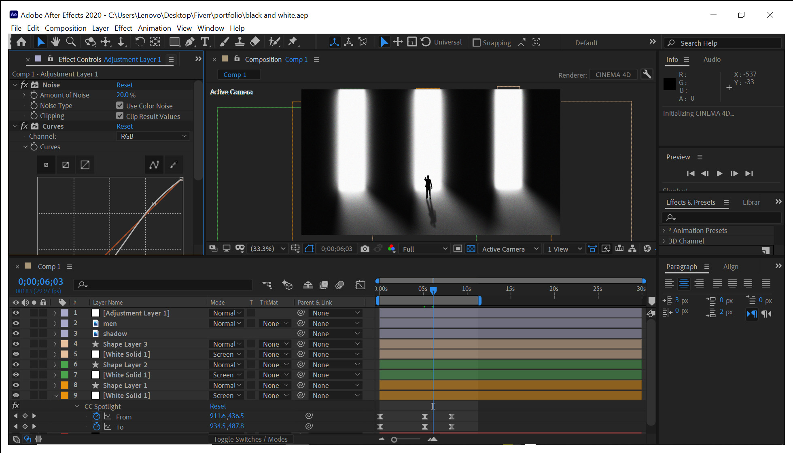

Project 05
Cinematic Story Sequence
A dramatic black and white cinematic piece - three spotlight shafts, a lone silhouette, film grain, and high contrast curves create an atmospheric narrative opening.

Lighting Setup
Three White Solid layers in Screen blend mode form the spotlight shafts. Each solid is masked with a tall tapered shape. The CC Spotlight effect is keyframed on the adjustment layer - animating the From and To coordinates to sweep the light beam across the scene over time.
Key Techniques
- White Solid layers in Screen blend mode for additive light blending over a black background
- CC Spotlight effect keyframed on the adjustment layer - From (911.6, 436.5) To (934.5, 487.8)
- Film grain noise via the Noise effect (Amount 20%) on a separate adjustment layer for a classic cinematic texture
- Curves effect on the adjustment layer - steepened S curve for high contrast black and white toning
- Silhouette figure layer ("men") composited in Normal mode at the base of the light columns
- Cinema 4D renderer enabled for depth-aware compositing
Duration30+ sec
RendererCinema 4D
ColourB&W + Curves